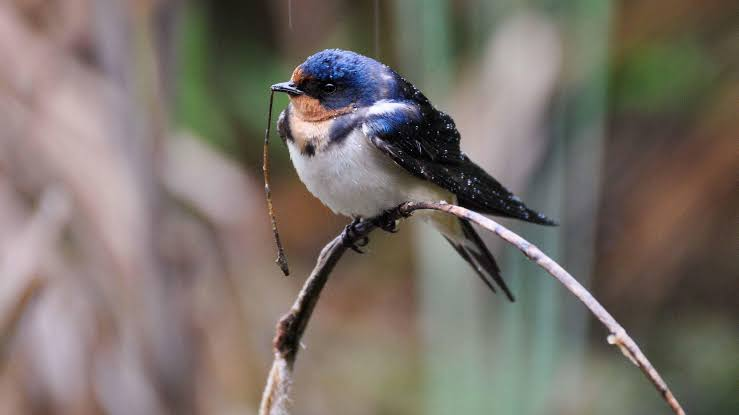

Swallo
Birds
The swallows, martins and saw-wings, or Hirundinidae, are a family of passerine birds found around the world on all continents, including occasionally in Antarctica. Highly adapted to aerial feeding, they have a distinctive appearance. The term Swallow is used colloquially in Europe as a synonym for the barn swallow.
Speed: 50 – 65 km/h (Travelling)
Family: Hirundinidae; Rafinesque, 1815
Scientific name: Hirundinidae
Class: Aves
Mass: Barn swallow: 18 g, Purple martin: 10 – 55 g,
Length: Barn swallow: 15 – 20 cm, Purple martin: 18 – 22 cm, Caribbean martin: 17 – 20 cm
Swallow, any of the approximately 90 species of the bird family Hirundinidae (order Passeriformes). A few, including the bank swallow, are called martins (see martin; see also woodswallow; for sea swallow, see tern).
Swallows are small, with pointed narrow wings, short bills, and small weak feet; some species have forked tails. Plumage may be plain or marked with metallic blue or green; the sexes look alike in most species.
Swallows spend much time in the air, capturing insects; they are among the most agile of passerine birds. For nesting, swallows may use a hole or cranny in a tree, burrow into a sandbank, or plaster mud onto a wall or ledge to house three to seven white, sometimes speckled, eggs.
Swallows occur worldwide except in the coldest regions and remotest islands. Temperate-zone species include long-distance migrants.
The common swallow (Hirundo rustica) is almost worldwide in migration; an American species, called barn swallow, may summer in Canada and winter in Argentina.
The 10 species of Petrochelidon, which make flask-shaped mud nests, include the cliff swallow (P. pyrrhonota), the bird of San Juan Capistrano Mission, in California; as with other swallows, it has strong homing instincts.
Biology of Swallo
Distribution and habitat
The family has a worldwide cosmopolitan distribution, breeding on every continent except Antarctica. One species, the Pacific swallow, occurs as a breeding bird on a number of oceanic islands in the Pacific Ocean, the Mascarene martin breeds on Reunion
and Mauritius in the Indian Ocean, and a number of migratory species are common vagrants to other isolated islands and even to some sub-Antarctic islands and Antarctica.
Many species have enormous worldwide ranges, particularly the barn swallow, which breeds over most of the Northern Hemisphere and winters over most of the Southern Hemisphere.
The family uses a wide range of habitats. They are dependent on flying insects and as these are common over waterways and lakes they will frequently feed over these, but they can be found in any open habitat including grasslands, open woodland, savanna, marshes, mangroves and scrubland, from sea level to high alpine areas.
Many species inhabit human-altered landscapes including agricultural land and even urban areas. Land use changes have also caused some species to expand their range, most impressively the welcome swallow which began to colonise New Zealand in the 1920s, started breeding in the 1950s and is now a common landbird there.
Diet and feeding
For the most part swallows are insectivorous, taking flying insects on the wing. Across the whole family a wide range of insects are taken from most insect groups, but the composition of any one prey type in the diet varies by species and with the time of year.
Individual species may be selective; they do not scoop up every insect around them, but instead select larger prey items than would be expected by random sampling. In addition the ease of capture of different insect types affects their rate of predation by swallows.
They also avoid certain prey types; in particular stinging insects such as bees and wasps are generally avoided. In addition to insect prey a number of species will occasionally consume fruits and other plant matter.
Species in Africa have been recorded eating the seeds of Acacia trees, and these are even fed to the young of the greater striped swallow.
The swallows generally forage for prey that is on the wing, but they will on occasion snap prey off branches or on the ground. The flight may be fast and involve a rapid succession of turns and banks when actively chasing fast moving prey.
less agile prey may be caught with a slower more leisurely flight that includes flying in circles and bursts of flapping mixed with gliding.
Where several species of swallow feed together they will be separated into different niches based on height off the ground, some species feeding closer to the ground and others feeding at higher levels. Similar separation occurs where feeding overlaps with swifts. Niche separation may also occur with the size of prey chosen.
Breeding
The more primitive species nest in existing cavities, for example in an old woodpecker nest, while other species excavate burrows in soft substrate such as sand banks.
Swallows in the genera Hirundo, Ptyonoproggne, Cecropis, Petrochelidon and Delichon build mud nests close to overhead shelter in locations that are protected from both the weather and predators.
The mud-nesters are most common in the Old World, particularly Africa, whereas cavity-nesters are the rule in the New World. Mud nesting species in particular are limited in areas of high humidity, which causes the mud nests to crumble.
Many cave, bank and cliff dwelling species of swallow nest in large colonies. Mud nests are constructed by both males and females, and amongst the tunnel diggers the excavation duties are shared as well.
In historical times, the introduction of man-made stone structures such as barns and bridges, together with forest clearance, has led to an abundance of colony sites around the globe, significantly increasing the breeding ranges of some species.
Birds living in large colonies typically have to contend with both ectoparasites and conspecific nest parasitism.
In barn swallows, old mated males and young unmated males benefit from colonial behaviour, whereas it is likely that females and mated young males benefit more from nesting by themselves.